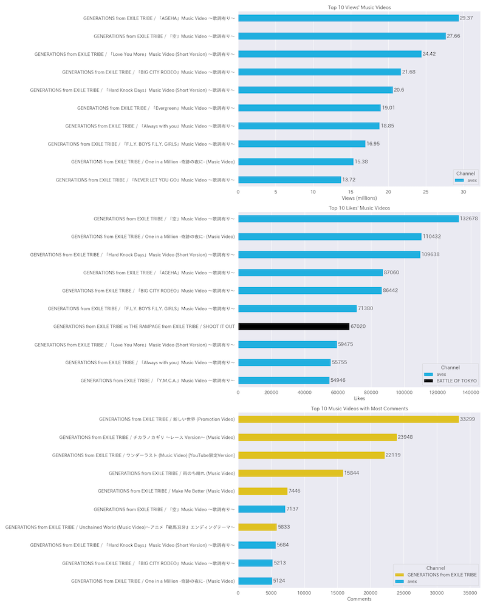
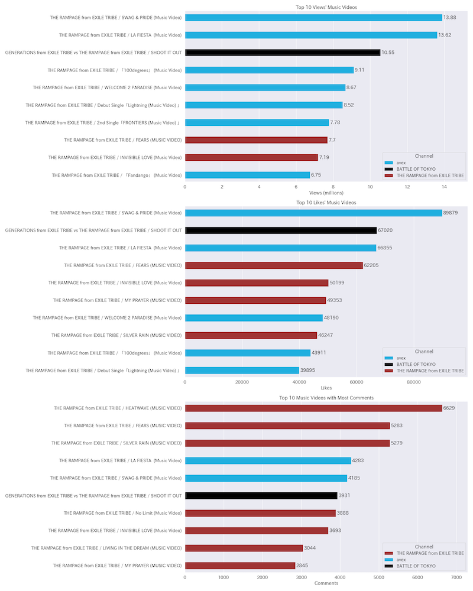
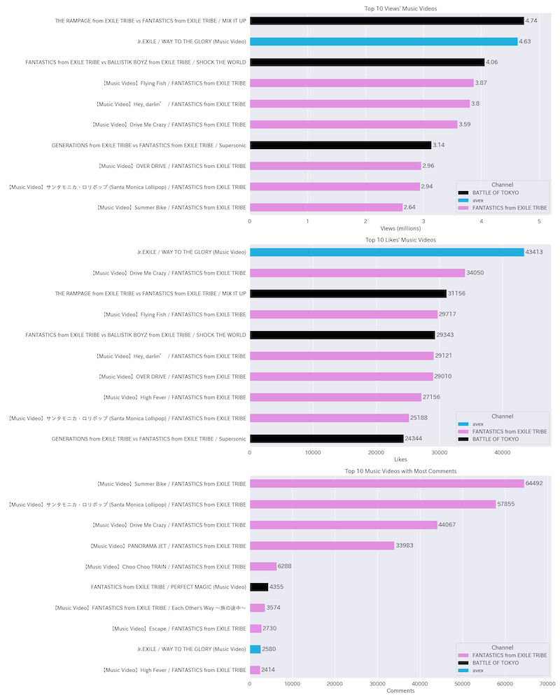
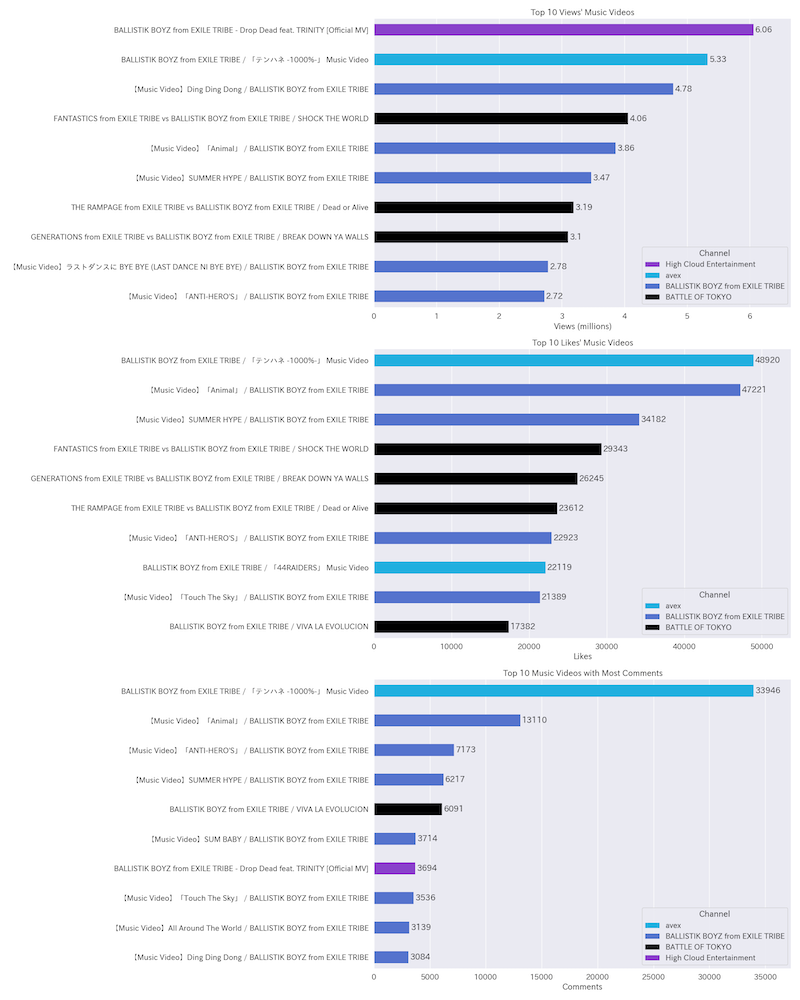
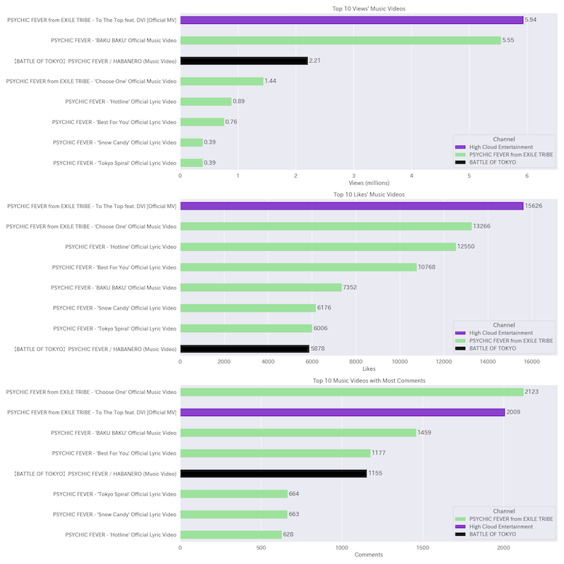
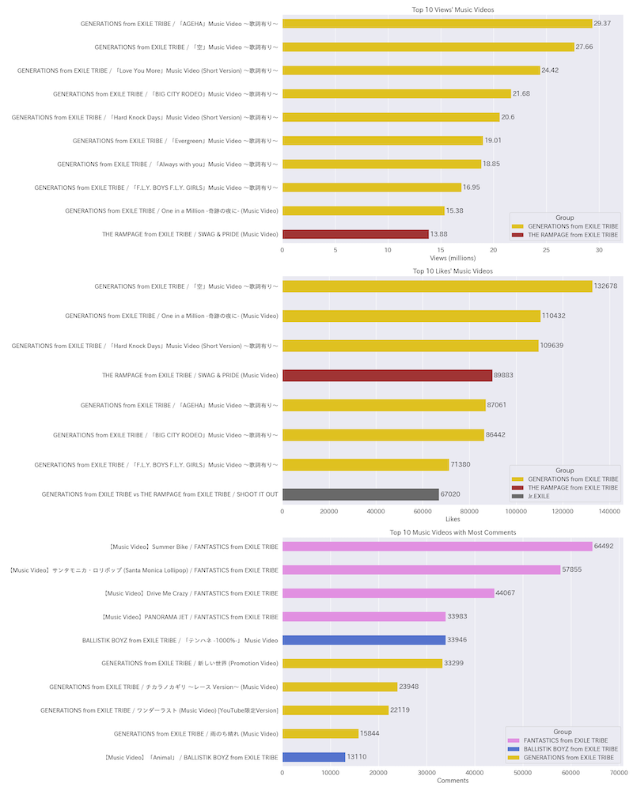
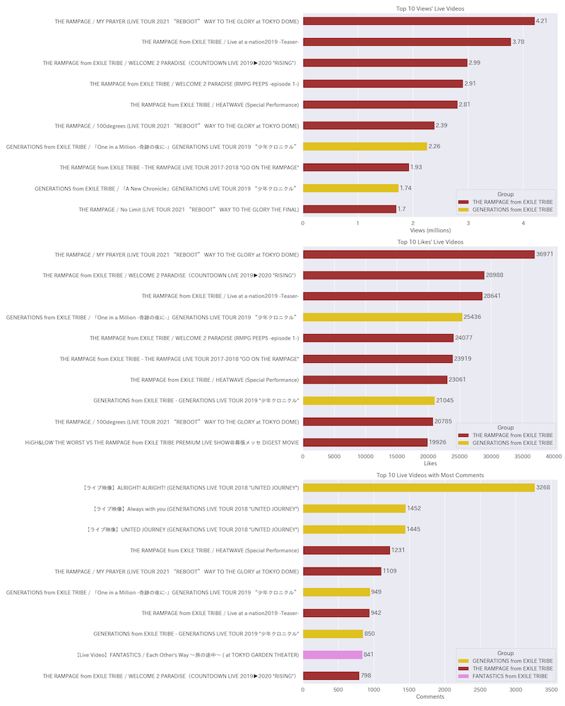
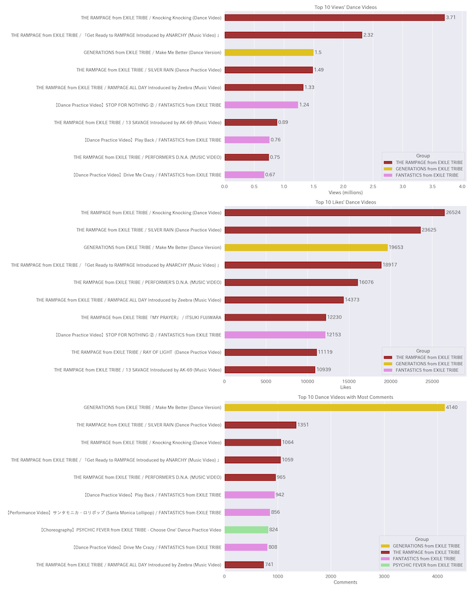
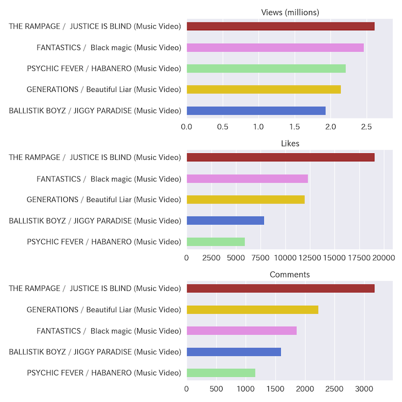

YouTube 數據抓取及分析 follow-up
在這個 YouTube Data 後續分析中，我抓取 Jr.EXILE 建立的播放清單中的影片統計數據後，分析並視覺化。補足上一個分析的缺點。
使用的程式語言跟平台: Python, Google Colaboratory
抓取數據的網站: YouTube
使用的套件: pandas, seaborn
程式完全在 Google Colab 上運作，檔案也都存放在 Google Drive 雲端。
文章
文章同步在 Medium
本篇接續處理上一篇發生的分類問題。
上次是在影片標題找關鍵字（例如，music video 或是 dance etc.），再做類別標籤，但因為 gene 頻道大多只放團體名跟歌名，所以沒有抓到影片類型。
今天直接到各頻道找他們自己放的播放清單。優點有二：
- 官方分類好 Music Video, Live & Stage, Dance Video etc.
- 抓得到其他頻道上傳的官方影片（主要是 avex）
專案目標
- 比較日本 Jr.EXILE 五個團體在 YouTube 的人氣
- 分析每個團體的可能強項 (music video, dance video, live video)
時間
數據抓取時間在 2023/7/25
Music Video 分析
因為 Music Video 是最重要的作品，所以單獨分析每一個團體的 Music Video 播放清單。
views(millions), likes, comments
gene
gene 的 Music Videos 主要是在唱片公司 avex 的 YouTube 頻道發佈（這也顯示了上一次分析的問題，不少影片不是在自己頻道上架）
有趣的是留言都集中在 gene 自己頻道發佈的影片
rmpg
跟 gene 的 pattern 差不多，但自己頻道發佈的 Music Videos 也不少 likes
一首跟 gene 合作的 SHOOT IT OUT 表現亮眼
fanta
fanta 最多 views and likes 的 Music Videos 中，有將近一半是跟 Jr.EXILE 其他團體的合作曲，甚至佔了 top 3 views
最多留言的影片中，前四支也太突出，跟後面的斷層看起來有點搞笑😂
bbz
跟 fanta 類似，最多 views and likes 有三分之一是跟其他團體的合作曲
不過， bbz 的 top 3 都是自己的歌
pcf
新團數據比較少，看不太出有趣的 pattern
Jr.EXILE Top 10 影片分析
抓取五個頻道的播放清單影片資訊後，根據 views, likes, comments 的數量排序
Top 10 Music Videos
Music Video 幾乎是 gene 的歌有最多的 views and likes
comments 還是這麼有趣，又是 fanta 的影片獲得最多的留言
Top 10 Live and Stage Videos
Live and Stage 的影片幾乎是 rmpg 有最多的 views and likes
comments 則是 gene 獲得較多的留言
Top 10 Dance Videos
Dance 影片是 rmpg, gene, fanta 都有一定程度的 views, likes and comments
小結
直到這個分析才真正找到能回答我最初的問題的證據，也就是，在所有舞蹈影片中， fanta 有較多支舞蹈影片獲得較多的觀看次數。白話來說， fanta 的確在舞蹈影片方面表現較自己其他種類的影片還要受關注。
對每個團的短評：
- gene 在 music video 的觀看次數看起來很厲害。
- rmpg 一如繼往在每個 YouTube 影片的指標分析皆表現亮眼。
- fanta 沒有專屬自己的熱門歌曲，是一件有點可惜的事。
- bbz 彷彿沒在認真經營 YouTube 頻道，抓不太到資料。
- pcf 依然讓我覺得相當有潛力。
最後，讓 Jr.EXILE 彼此合作的企劃 BOT 很重要，帶後輩團的效果挺好的。
以上！
BOT 影片分析
一樣的問題是沒有考慮團體出道時間跟影片發佈時間，因為我還沒想到怎麼放進分析啊哈哈🙇🏻♀️
那就加碼一個最新的 BOT 五個影片的 YouTube 影片統計數據！（2023/7/25）
rmpg 真的穩定的表現優異
居然也默默更新到第五篇了。
有任何問題歡迎來訊討論。
有緣下次 YouTube Data 專案見👋
希望可以被 HIRO桑 hire ，非常嚮往 LDH 充滿人情味的公司文化呢🥹